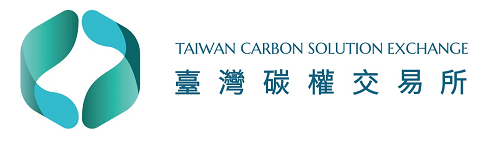

實施國內減量額度交易實現減排目標
了解國內減量額度交易
國內減量額度交易制度是透過市場機制，讓企業可以交易經過認證的減排額度。這不僅鼓勵企業積極減少溫室氣體排放，還能將多餘的減排額度售予其他需要達成減排目標的企業。此制度促進了環保行為的市場化，並且為企業提供了一個靈活且經濟的減排途徑。
透過國內減量額度交易，企業能以較低成本達成減排目標，並在市場中購買或出售額度，這不僅提升了企業間的合作與靈活性，還能有效降低整體碳排放，有助於實現國家的碳減排承諾，促進環境保護與經濟發展的雙贏局面。
台灣碳權交易所

台灣碳權交易所與國內減量額度交易有關。台灣碳權交易所是專門為了促進國內碳排放交易而設立的機構，旨在提供一個公開透明的市場平台，讓企業可以買賣碳排放額度。透過這個交易所，企業能夠以市場化的方式達成其法定的碳排放目標，並且在減排成本與碳交易收入之間取得平衡。台灣碳權交易所還負責監控碳排放數據，確保交易的公正性和透明度，並推動企業間的碳排放管理和減排技術的提升，從而支持台灣達成國際減排承諾。
了解更多